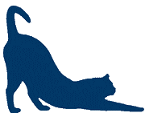
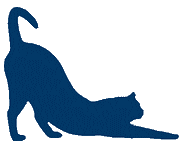

Welcome!
Hi there! Welcome to the Gaming Cats' Clubhouse where you can enjoy some of your favourite
online games. In order to play the games, please sign in or register.
Our website offers the following games to our users:
- Tic Cat Toe
- Cat Paper Scissors Lizard Spock
- Catsino Craps
With much more to come soon!


 
